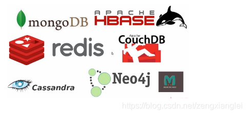
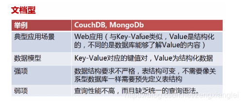
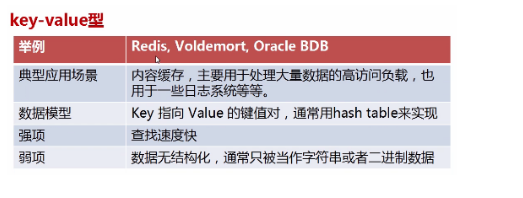
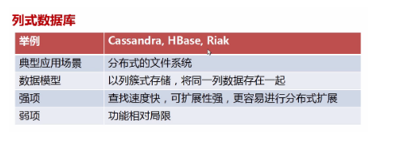
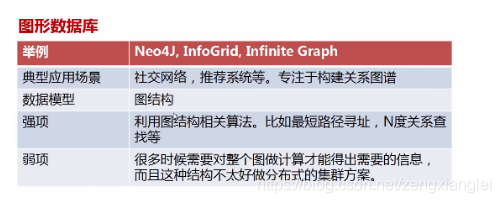

一 关系型数据库 有
我们只需要 记住常用的几个：mysql /oracle/sql server/sqlite
几个即可
我还有一篇文章 介绍了 关系型数据库和非关系型数据的数据结构 –红黑树-二叉树-B树
1.首先了解一下 什么是关系型数据库？
例如，人是一个实体，人与人之间有关系，这种实体和关系间的对应就可以表达为一个关系模型。现实世界中我们可以定义很多实体，一个人是一个实体，一辆车、一栋房子都可以表达成一个实体。实体是一系列属性的集合，人作为一个实体有姓名、年龄、性别等基本属性，人还可以有职业、爱好等附加属性，这些属性的集合构成人这个实体。与此同时，一个属性也可以单独成为一个实体。例如，性别就可以成为一个单独的实体，这个实体里的属性包括两种，男和女。人这个实体和性别这个实体之间存在一个关系，一个人只能有一种性别，所以人和性别这两个实体之间的关系是一对一的。职业也可以构成一个实体，职业的属性包括工程师、建筑师、画家等很多种，人作为实体与职业这个实体的关系是一对多的，也就是说一个人可以拥有多个职业，是建筑师的同时也可能是画家。将这种现实世界中的实体和关系通过关系模型表达出来就可以形成一种数据存储关系，通过这种方式表达的数据库就叫作关系型数据库。
优点：
1、易于维护：都是使用表结构，格式一致；
2、使用方便：SQL语言通用，可用于复杂查询；
3、复杂操作：支持SQL，可用于一个表以及多个表之间非常复杂的查询。
缺点：
1、读写性能比较差，尤其是海量数据的高效率读写；
2、固定的表结构，灵活度稍欠；
3、高并发读写需求，传统关系型数据库来说，硬盘I/O是一个很大的瓶颈。
二 非关系型数据库

我们只需要
记住常用的：redis / hbase /mongoDB /CouchDB /Neo4J 【注意：hive
不是数据库，是数据仓库 不是一个概念】
什么非关系型数据库呢？
非关系型数据库严格上不是一种数据库，应该是一种数据结构化存储方法的集合，可以是文档或者键值对等
优点：
1、格式灵活：存储数据的格式可以是key,value形式、文档形式、图片形式等等，文档形式、图片形式等等，使用灵活，应用场景广泛，而关系型数据库则只支持基础类型。
2、速度快：nosql可以使用硬盘或者随机存储器作为载体，而关系型数据库只能使用硬盘；
3、高扩展性；
4、成本低：nosql数据库部署简单，基本都是开源软件。
缺点：
1、不提供sql支持，学习和使用成本较高；
2、无事务处理；
3、数据结构相对复杂，复杂查询方面稍欠。
非关系型数据库的分类和比较：
1、文档型
2、key-value型
3、列式数据库
(数据即索引；高压缩比；一般使用LSM模型,数据先存在内存进行排序,数据量大了再溢写到磁盘；不适合做含有删除和更新的实时操作)
4、图形数据库



数据即索引；高压缩比；
一般使用LSM模型，数据先存在内存进行排序，数据量大了再溢写到磁盘；
不适合做含有删除和更新的实时操作（删除和更新需要解压缩Block
然后计算然后重新压缩储存）
